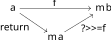
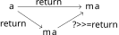
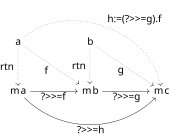

The programmer’s monad is presented differently than the mathematicians. For the presentation here, I’m going to follow notions as in Haskell. Fortunately, the Haskellian definition has some commonality to the mathematical one in that it builds on the definition of functors.
The programmer’s functor needs less overhead than the mathematician’s, but benefits from understanding the notion of ’parametrized types’. Follow the link in the header to see some examples.
Parametric types are enough to define the programmer’s functor.
The third step in getting to the programmer’s monad.
Monads
And so once again we arrive at the monad.. may as well get into it. A monad is
the data of an applicative m together with the following data
return :: a -> m a (>>=) :: m a -> (a -> m b) -> m b
This data has to satisfy the conditions below:
return x >>= f = f x mx >>= return = mx
(mx >>= f) >>= g = mx >>= (\x -> (f x >>= g))
Note: Typically, the return function is equal to the pure function of the
underlying applicative
The operator (>>=) is typically called bind and it has an interesting
property. It’s definition gives a way to, from a map f :: a -> mb, construct a
map ma -> mb. In particular, the first rule imposes a commuting diagram:

This gives a certain sense that m a reflects certain properties of a. That
is, if we take M to be the category of types of the form m z for any type
z, this property says that any map a -> m b from a into M can be
factored through m a. We can see this as a type of pattern matching too. If
we’re given (1) some object mx :: m a of the form mx = pure x for some x ::
a and (2) a function f :: a -> m b, the bind operator lets us effectively
apply f to x. That is, it lets us “unwrap” the monadic application of m.
This also turns out to be related to a mathematical/categorical notion of
reflection, but let’s continue for now.
Heading into the second condition, notice that if we replace f with return
in the diagram above, we get:

This is just saying that the function ? >>= return :: m a -> m a is the
identity when restricting to the image of return :: a -> m a. The second
condition requires that this function actually be the identity on the entirety
of m a.
The third axiom can also be expressed in terms of a commuting diagram. Below, the solid diagram represents the relevant condition, and the dotted lines give (to me) relevant context.

Parsing out this diagram essentially says that the bind operator respects
composition of functions. Morally, I’d like h to be the composition of f and
g, but we don’t quite have that since we’re not actually dealing with the
domains of these functions but rather their return types.
Taking some earlier remarks, the >>= notation can be cumbersome at times and
Haskell introduces a notation to help out here. Firstly, given a monad m, I’m
going to refer to m a as ’expressions on a’. This isn’t a totally suitable
name, but also not totally unsuitable. At the very least it captures the pattern
matching flavor that, given an expression mx :: m a, then a function of the
form >>= can handle mx as if we have access to some x :: a itself. Suppose
we have expressions m1, m2, ..., mn on types a1, a2, ..., an, so that each
mi can either be expressed as mi = return xi or else it is in the compliment
of the return function. Then you can end up with an expression of the form
below, were we may want to evaluate at some appropriate function at the very
end:
m1 >>= \x1 ->
m2 >>= \x2 ->
...
mn >>= \xn ->
f x1 x2 ... xn
By virtue of the monad, if each mi is indeed of the form xi :: ai, then we
can apply our function f as normal. Otherwise, the bind operator tells us
how to extend f to a function on the mi-s. An alternate notation that let’s
us emphasize the “extraction of xi from mi” is the following:
do
x1 <- m1
x2 <- m2
...
xn <- mn
f x1 x2 ... xn
This notation makes it a bit clearer that at each stage, we will try to extract
the appropriate xi. But if that’s impossible, then we’ll resort to the more
abstract extension to the mi values.
Okay, that’s enough overarching general nonsense for now. Here are some very basic examples:
Maybe This’ll probably be most everyone’s first example of a monad in computer
science. In this case, notice that any “reasonable” map Maybe a -> Maybe b
will probably want us to send Nothing to Nothing. To get the rest of the map,
we’d just need some f :: a -> Maybe b. Then >>= can be defined by two cases:Just x >>= f = f x
Nothing >>= f = Nothing
[]. Also another easy example of a monad. To think this through, the
bind operator >>= lets us turn a map a->[b] into a map [a]->[b]. So, if
f::a->[b] lets me construct a list for each element x of a, then for some [x1,
..., xn] :: [a], I can apply f to each element to get a list of lists [f x1,
..., f xn]. Then I can just naively concatenate these lists to get a single
list f x1 \++ ... \++ f xn. Yep, that’s bind:xs >>= f = [y | x <- xs, y <- f x]